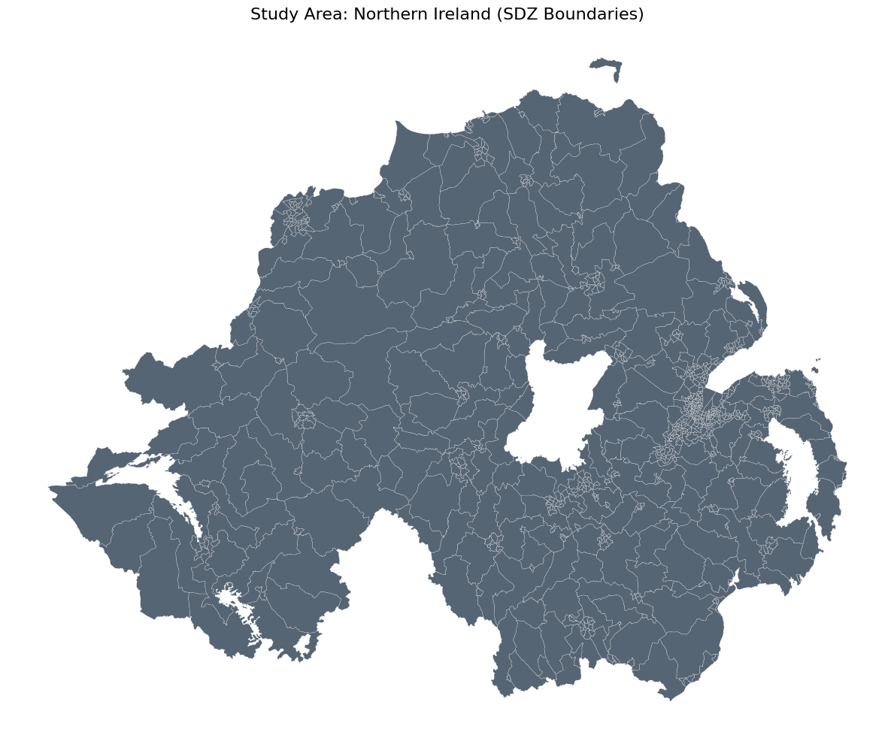
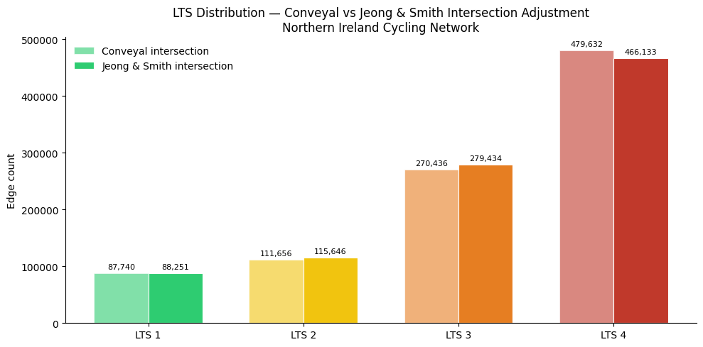

This notebook applies the Conveyal Estimated LTS framework (Conveyal 2015; Mekuria et al. 2012), augmented by Jeong & Smith (2025), to the Northern Ireland road network extracted from OpenStreetMap.
Purpose: classify every cyclable road segment in Northern Ireland by Level of Traffic Stress (LTS 1–4), producing a labelled network ready for downstream Conveyal analysis, routing, and accessibility modelling.
1 Methodology overview
The pipeline implements three core stages:
OSM network extraction — download the full road network via OSMnx, filter to cyclable highway types, and save as GeoParquet
Cycle infrastructure classification — derive 6 categories (Protected a/b/c, Unprotected Mandatory, Unprotected Advisory, Off-Road) from OSM tags following Jeong & Smith (2025) Table 1
Level of Traffic Stress (LTS) — augmented Conveyal-based scheme with Routino fallback, cycle infrastructure override, and signalised junction adjustment
2 References
Jeong, P. & Smith, D. (2025). Improving Infrastructure and Accessibility Indicators for Urban Cycling Networks. CASA Working Paper 242.
Mekuria, M. C., Furth, P. G., & Nixon, H. (2012). Low-Stress Bicycling and Network Connectivity. MTI Report 11-19.
Conveyal (2015). Cycling Level of Traffic Stress.
Department for Transport (2020). LTN 1/20: Cycle Infrastructure Design.
3 Environment setup
View Python Code
import osfrom pathlib import Pathimport geopandas as gpd# Mount Google Drive to access project filesfrom google.colab import drivedrive.mount('/content/drive')PROJECT_ROOT = Path('/content/drive/MyDrive/PCTNI')CODE_DIR = PROJECT_ROOT /"Code"DATA_DIR = PROJECT_ROOT /"Data"FIGURE_DIR = PROJECT_ROOT /"Figure"DATA_DIR.mkdir(parents=True, exist_ok=True)FIGURE_DIR.mkdir(parents=True, exist_ok=True)file_path = DATA_DIR /"zones_sdz.gpkg"if file_path.exists():# Load the Northern Ireland 2021 Super Data Zones (SDZ) raw_data = gpd.read_file(file_path, engine="pyogrio")print(f"Success: Loaded {len(raw_data)} spatial features.")# Optional: Display the first few rows to verify the data# print(raw_data.head())else:print(f"Critical Error: File not found at {file_path.absolute()}")print("Please verify that the file exists in your Google Drive 'Data' folder.")
Drive already mounted at /content/drive; to attempt to forcibly remount, call drive.mount("/content/drive", force_remount=True).
Success: Loaded 850 spatial features.
4 Study area
Northern Ireland, using 2021 Super Data Zones (SDZ) as the spatial unit. All spatial operations use Irish Grid (EPSG:29903).
View Python Code
# Load the Northern Ireland 2021 Super Data Zones (SDZ)raw_data = gpd.read_file(DATA_DIR /"zones_sdz.gpkg")# Set coordinate system to Irish Gridstudy_area = raw_data.to_crs(CRS_IG)study_area_union = study_area.unary_union# Visualisationfig, ax = plt.subplots(figsize=(12, 10))study_area.plot(ax=ax, edgecolor='white', linewidth=0.2, facecolor='#2c3e50', alpha=0.8)if'LGD2014Name'in study_area.columns: labels = study_area.dissolve(by='LGD2014Name')for idx, row in labels.iterrows(): center = row.geometry.representative_point() ax.annotate( text=idx, xy=(center.x, center.y), ha='center', fontsize=8, color='white', weight='bold', bbox=dict(facecolor='black', alpha=0.4, edgecolor='none', boxstyle='round,pad=0.2') )ax.set_title('Study Area: Northern Ireland (SDZ Boundaries)', fontsize=16)ax.set_axis_off()plt.tight_layout()plt.show()total_area_km2 = study_area.geometry.area.sum() /1e6print(f"\nTotal study area: {total_area_km2:.1f} km²")print(f"Total SDZ zones: {len(study_area)}")

Total study area: 13628.3 km²
Total SDZ zones: 850
5 Extract the OSM road network
The full road network is extracted via OSMnx using the study area polygon, with network_type='all' because Northern Ireland has very few edges with dedicated cycling tags — using 'cycling' returns near-zero results. Key cycling-relevant OSM tags (cycleway, cycleway:left/right/both, bicycle, surface, segregated, lit) are requested via ox.settings.useful_tags_way to ensure the infrastructure classification and LTS pipeline have complete attribute coverage.
After extraction, edges are reprojected to Irish Grid (EPSG:29903) and saved as GeoParquet. Subsequent runs load directly from the cached file.
Data version: OSM data retrieved via Overpass API on 2025-05-07, containing all edits up to 2025-05-07T20:21:31Z.
View Python Code
NETWORK_FILE = DATA_DIR /"ni_cycling_network_full.parquet"if NETWORK_FILE.exists(): edges = gpd.read_parquet(NETWORK_FILE) has_cycling_tags =any(c in edges.columnsfor c in ['cycleway', 'cycleway:left', 'bicycle'])if has_cycling_tags:print(f"Loaded {len(edges):,} edges with cycling tags from cache")ifnot NETWORK_FILE.exists() ornot has_cycling_tags:print("Extracting from OSM with cycling tags (one-time, ~5-10 min)...") ox.settings.useful_tags_way += ['cycleway', 'cycleway:left', 'cycleway:right', 'cycleway:both','bicycle', 'foot', 'surface', 'segregated', 'lit', ] study_area_4326 = study_area.to_crs(CRS_WGS84) G = ox.graph_from_polygon( study_area_4326.union_all(), network_type='all', custom_filter=('["highway"~"motorway|trunk|primary|secondary|tertiary|''unclassified|residential|living_street|cycleway|service|''path|footway|track"]' ), ) edges = ox.graph_to_gdfs(G, nodes=False) edges = edges.reset_index() edges = edges.to_crs(CRS_IG)# Fix mixed types for Parquetfor col in edges.select_dtypes(include='object').columns:if col !='geometry': edges[col] = edges[col].astype(str) edges = edges.replace('nan', np.nan) edges.to_parquet(NETWORK_FILE)print(f"Saved {len(edges):,} edges to {NETWORK_FILE}")print(f"Columns: {edges.columns.tolist()}")
# Fix mixed-type columns (lists vs scalars) for Parquet compatibilityfor col in edges.select_dtypes(include='object').columns:if col !='geometry': edges[col] = edges[col].astype(str)# Replace string 'nan' with proper NaN for downstream logicedges = edges.replace('nan', np.nan)edges.to_parquet(DATA_DIR /"ni_cycling_network_full.parquet")print(f"Saved {len(edges):,} edges to {DATA_DIR /'ni_cycling_network_full.parquet'}")
Saved 1,110,520 edges to /content/drive/MyDrive/PCTNI/Data/ni_cycling_network_full.parquet
def classify_cycle_infrastructure(row):""" Classify a road segment into one of 6 cycle infrastructure categories plus a default 'no infrastructure' class, following Jeong & Smith (2025) Table 1. """ highway =str(row.get('highway', '') or'') cycleway =str(row.get('cycleway', '') or'') cycleway_left =str(row.get('cycleway:left', '') or'') cycleway_right =str(row.get('cycleway:right', '') or'') cycleway_both =str(row.get('cycleway:both', '') or'') bicycle =str(row.get('bicycle', '') or'')# Protected (b): dedicated cycleway as separate geometryif highway =='cycleway':if cycleway notin ('share_busway', 'shared_busway'):return'protected_b'# Protected (c): cycleway physically separated from roadif cycleway in ('separate', 'sidepath') or bicycle =='use_sidepath':return'protected_c'# Protected (a): track adjacent to road track_tags = ('track',)if (cycleway in track_tags or cycleway_left in track_tagsor cycleway_right in track_tags or cycleway_both in track_tags):return'protected_a'# Unprotected mandatory cycle lane lane_tags = ('lane', 'opposite_lane')if (cycleway in lane_tags or cycleway_left in lane_tagsor cycleway_right in lane_tags or cycleway_both in lane_tags):return'unprotected_mandatory'# Unprotected advisory (includes shared bus lanes) advisory_tags = ('advisory', 'shared', 'share_busway', 'shared_lane', 'shared_busway')if (cycleway in advisory_tags or cycleway_left in advisory_tagsor cycleway_right in advisory_tags or cycleway_both in advisory_tags):return'unprotected_advisory'# Off-road paths with bicycle accessif highway in ('path', 'track', 'footway'):if bicycle in ('designated', 'yes'):return'off_road'return'none'edges['cycle_infra'] = edges.apply(classify_cycle_infrastructure, axis=1)print("Cycle infrastructure distribution (by edge count):")print(edges['cycle_infra'].value_counts())print(f"\n% with any cycle infrastructure: "f"{(edges['cycle_infra'] !='none').mean() *100:.1f}%")
Visual inspection of cycle infrastructure classification across Northern Ireland. Compare with local knowledge or DfI cycling maps to verify OSM tag quality.
7 Level of Traffic Stress (LTS) — Augmented Conveyal Scheme
The Conveyal Estimated LTS scheme is a sequential rule-based implementation of Mekuria et al. (2012), adapted for contexts where only standard OpenStreetMap tags are available. Jeong & Smith (2025) augment this with three improvements:
Full network coverage via Routino fallback for unclassified edges (especially highway=service)
Cycle infrastructure override — protected infrastructure takes precedence over road class
Signalised junction adjustment — reduces intersection stress where traffic signals are present
7.1 Pipeline execution order
Step
Function
Description
1
get_speed_kmh()
Parse OSM speed tags
2
calculate_lts()
Base Conveyal per-edge classification
3
is_cyclable()
Filter non-cyclable edges
4
apply_cycle_infra_override()
Protected infrastructure → LTS 1–2
5
apply_routino_fallback()
Fill remaining unclassified edges
6
apply_conveyal_intersection_adjustment()
Max-LTS propagation at unsignalised junctions
7
apply_jeong_smith_intersection()
Signal-aware intersection adjustment
Steps 4–5 run before Steps 6–7 to ensure every edge has a valid baseline LTS before the intersection propagation pass.
7.2 Extract traffic signal locations
Traffic signal nodes are needed for the Jeong & Smith signalised intersection adjustment (Step 7). These are extracted via OSMnx from the Overpass API.
View Python Code
# Extract traffic signal nodes from OSM via Overpasstraffic_signals = ox.features_from_polygon( study_area_4326.union_all(), tags={'highway': 'traffic_signals'})if traffic_signals isnotNoneandlen(traffic_signals) >0: traffic_signals = traffic_signals.to_crs(CRS_IG)# Keep only point geometries (nodes, not ways) traffic_signals = traffic_signals[traffic_signals.geometry.geom_type =='Point']print(f"Traffic signal nodes: {len(traffic_signals):,}")else:print("WARNING: No traffic signals found. Step 7 will be skipped.") traffic_signals =None
Traffic signal nodes: 3,142
View Python Code
# Count intersections and signal coveragedef geom_to_endpoints(geom):if geom.geom_type =='MultiLineString': coords_start =list(geom.geoms[0].coords) coords_end =list(geom.geoms[-1].coords) start =tuple(np.round(coords_start[0], 2)) end =tuple(np.round(coords_end[-1], 2))else: coords =list(geom.coords) start =tuple(np.round(coords[0], 2)) end =tuple(np.round(coords[-1], 2))return start, endendpoints = edges['geometry'].apply(geom_to_endpoints)all_nodes = []for start, end in endpoints: all_nodes.append(start) all_nodes.append(end)node_counts = Counter(all_nodes)total_nodes =len(node_counts)intersections = {n: c for n, c in node_counts.items() if c >=3}n_intersections =len(intersections)print(f"Total unique nodes : {total_nodes:,}")print(f"True intersections (deg >= 3): {n_intersections:,}")if traffic_signals isnotNone:print(f"Signal coverage : {len(traffic_signals) / n_intersections *100:.1f}%")
Total unique nodes : 479,043
True intersections (deg >= 3): 313,659
Signal coverage : 1.0%
View Python Code
# =============================================================================# AUGMENTED CONVEYAL LTS PIPELINE — Northern Ireland Cycling Network# =============================================================================# ── Constants ──SPEED_THRESHOLD_KMH =25*1.609# 25 mph -> ~40.23 km/hLANE_THRESHOLD =3MISSING_LANES =999NO_CAR_HIGHWAYS = {'cycleway', 'path', 'footway', 'pedestrian', 'track', 'bridleway'}ROUTINO_FALLBACK_LTS = {'cycleway': 1, 'path': 1, 'track': 1, 'living_street': 1,'footway': 1, 'pedestrian': 1,'service': 2, 'bridleway': 2,'steps': 3, 'secondary': 3,'primary': 4, 'primary_link': 4, 'trunk': 4, 'trunk_link': 4,}# ── Step 1: Speed parser ──def get_speed_kmh(maxspeed_tag):if pd.isna(maxspeed_tag) orstr(maxspeed_tag).strip() =='':return np.nan s =str(maxspeed_tag).lower().strip() m = re.match(r'^([0-9][\.0-9]*?)?(km/h|kmh|kph|mph|knots)?$', s)ifnot m:return np.nan val, unit =float(m.group(1)), m.group(2)if unit =='mph': return val *1.609if unit =='knots': return val *1.852return val# ── Step 2: Base Conveyal per-edge LTS classifier ──def calculate_lts(row): highway =str(row.get('highway', '') or'').lower().strip() cycle_infra =str(row.get('cycle_infra', 'none') or'none').lower().strip()if highway in NO_CAR_HIGHWAYS: return1if highway =='service': returnNoneif highway in ('residential', 'living_street'): return1 speed_kmh = get_speed_kmh(row.get('maxspeed'))try: lanes =int(float(row.get('lanes'))) if pd.notnull(row.get('lanes')) else MISSING_LANESexcept (ValueError, TypeError): lanes = MISSING_LANES slow_road = (not np.isnan(speed_kmh)) and (speed_kmh <= SPEED_THRESHOLD_KMH) unknown_speed = np.isnan(speed_kmh) few_lanes = lanes <= LANE_THRESHOLD unknown_lanes = lanes == MISSING_LANES default_lts =3if slow_road and (few_lanes or unknown_lanes): default_lts =2elif few_lanes and unknown_speed: default_lts =2if highway in ('unclassified', 'tertiary', 'tertiary_link'):if unknown_lanes and slow_road: default_lts =2if cycle_infra in ('protected_a', 'unprotected_mandatory', 'unprotected_advisory'):return2return default_ltsif cycle_infra in ('protected_a', 'unprotected_mandatory', 'unprotected_advisory'):return default_ltsreturn4# ── Step 3: Cyclability filter ──def is_cyclable(row): highway =str(row.get('highway', '') or'').lower().strip()if highway in {'motorway', 'motorway_link', 'proposed', 'construction','abandoned', 'platform'}:returnFalse service_type =str(row.get('service', '') or'').lower().strip()if highway =='service'and service_type in {'parking_aisle', 'driveway', 'drive-through', 'car_wash', 'garages'}:returnFalseifstr(row.get('bicycle', '') or'').lower().strip() in ('no', 'private', 'restricted'):returnFalsereturnTrue# ── Step 4: Jeong & Smith cycle infrastructure override ──def apply_cycle_infra_override(edges): ci = edges['cycle_infra'].str.lower().str.strip() fully_protected = ci.isin(['protected_b', 'protected_c', 'off_road']) adjacent_track = ci =='protected_a' edges.loc[fully_protected, 'lts'] =1 edges.loc[adjacent_track, 'lts'] =2print(f" protected_b/c/off_road -> LTS 1 : {fully_protected.sum():,} edges")print(f" protected_a -> LTS 2 : {adjacent_track.sum():,} edges")return edges# ── Step 5: Routino highway fallback ──def apply_routino_fallback(edges): mask = edges['lts'].isna()if mask.sum() ==0:print(" No unclassified edges.")return edges fallback = edges.loc[mask, 'highway'].str.lower().str.strip().map(ROUTINO_FALLBACK_LTS) edges.loc[mask, 'lts'] = fallbackprint(f" Filled : {fallback.notna().sum():,} | Still NaN : {edges['lts'].isna().sum():,}")return edges# ── Step 6: Conveyal intersection adjustment ──def apply_conveyal_intersection_adjustment(edges):def ep(geom):if geom.geom_type =='MultiLineString':return (tuple(np.round(list(geom.geoms[0].coords)[0], 2)),tuple(np.round(list(geom.geoms[-1].coords)[-1], 2))) c =list(geom.coords)returntuple(np.round(c[0], 2)), tuple(np.round(c[-1], 2)) ve = defaultdict(list)for idx, row in edges.iterrows(): s, e = ep(row.geometry) ve[s].append(idx); ve[e].append(idx) intersections = {c: e for c, e in ve.items() iflen(e) >=3} edges = edges.copy() lts_series = edges['lts'].copy() n_upgraded =0for _, edge_idxs in intersections.items(): vals = [lts_series[i] for i in edge_idxs if pd.notnull(lts_series[i])]ifnot vals: continue mx =max(vals)for i in edge_idxs:if pd.notnull(lts_series[i]) and mx > lts_series[i]: lts_series[i] = mx; n_upgraded +=1 edges['lts'] = lts_seriesprint(f" Intersections : {len(intersections):,} | Edges upgraded : {n_upgraded:,}")return edges# ── Step 7: Jeong & Smith signalised intersection adjustment ──def apply_jeong_smith_intersection(edges, traffic_signals, signal_buffer_m=15.0):def ep(geom):if geom.geom_type =='MultiLineString':return (tuple(np.round(list(geom.geoms[0].coords)[0], 2)),tuple(np.round(list(geom.geoms[-1].coords)[-1], 2))) c =list(geom.coords)returntuple(np.round(c[0], 2)), tuple(np.round(c[-1], 2)) ve = defaultdict(list)for idx, row in edges.iterrows(): s, e = ep(row.geometry) ve[s].append(idx); ve[e].append(idx) intersections = {c: e for c, e in ve.items() iflen(e) >=3} sig_geoms = traffic_signals.geometry.values sig_sindex = traffic_signals.sindexdef is_signalised(xy): pt = Point(xy) cands =list(sig_sindex.intersection(pt.buffer(signal_buffer_m).bounds))returnany(sig_geoms[i].distance(pt) <= signal_buffer_m for i in cands) edges = edges.copy() lts_series = edges['lts'].copy() n_unsig = n_sig = n_reduced =0for coord, edge_idxs in intersections.items(): vals = [lts_series[i] for i in edge_idxs if pd.notnull(lts_series[i])]ifnot vals: continue mx =max(vals)if is_signalised(coord): n_sig +=1 mn =min(vals)if mx <=2: jlts =1; n_reduced +=1elif mn <=2and mx >=3: jlts = mx -1; n_reduced +=1else: jlts = mxelse: n_unsig +=1; jlts = mxfor i in edge_idxs:if pd.notnull(lts_series[i]) and jlts > lts_series[i]: lts_series[i] = jlts edges['lts'] = lts_seriesprint(f" Intersections : {len(intersections):,}")print(f" Unsignalised : {n_unsig:,} | Signalised : {n_sig:,} | Reduced : {n_reduced:,}")return edges# ── Helper ──def print_lts_dist(edges, mask, label): d = edges.loc[mask, 'lts'].value_counts().sort_index()print(f"\n-- {label} --")for k in [1.0, 2.0, 3.0, 4.0]:print(f" LTS {int(k)} : {d.get(k,0):>8,}")print(f" None : {edges.loc[mask,'lts'].isna().sum():>8,}")# ── Execute Pipeline ──# Step 2: Base Conveyal per-edge labellingedges['lts'] = np.nancyclable_mask = edges.apply(is_cyclable, axis=1)edges.loc[cyclable_mask, 'lts'] = edges[cyclable_mask].apply(calculate_lts, axis=1)print(f"Cyclable edges : {cyclable_mask.sum():,} | "f"Labeled : {edges.loc[cyclable_mask,'lts'].notna().sum():,} | "f"Unlabeled : {edges.loc[cyclable_mask,'lts'].isna().sum():,}")print_lts_dist(edges, cyclable_mask, "Step 2 - Base Conveyal per-edge")# Step 4: Cycle infrastructure overrideprint("\n-- Step 4 - Jeong & Smith cycle infrastructure override --")edges = apply_cycle_infra_override(edges)# Step 5: Routino highway fallbackprint("\n-- Step 5 - Routino highway fallback --")edges = apply_routino_fallback(edges)print_lts_dist(edges, cyclable_mask, "After Steps 4+5 (Pre-Intersection Baseline)")# Save snapshot before intersection passesedges['lts_pre_intersection'] = edges['lts'].copy()# Step 6: Conveyal intersection adjustment (for comparison)print("\n-- Step 6 - Conveyal intersection adjustment --")edges_conveyal = apply_conveyal_intersection_adjustment(edges.copy())edges['lts_conveyal_intersection'] = edges_conveyal['lts']print_lts_dist(edges, cyclable_mask, "After Step 6 - Strict Conveyal intersection")# Step 7: Jeong & Smith signalised intersection adjustmentif traffic_signals isnotNoneandlen(traffic_signals) >0:print("\n-- Step 7 - Jeong & Smith signalised intersection adjustment --") edges['lts'] = edges['lts_pre_intersection'].copy() edges = apply_jeong_smith_intersection(edges, traffic_signals) print_lts_dist(edges, cyclable_mask, "After Step 7 - Jeong & Smith intersection")else:print("\nStep 7 skipped — no traffic signal data available.") edges['lts'] = edges['lts_conveyal_intersection'].copy()# Diagnostic comparisonconveyal_d = edges.loc[cyclable_mask, 'lts_conveyal_intersection'].value_counts().sort_index()jeong_d = edges.loc[cyclable_mask, 'lts'].value_counts().sort_index()print(f"\n-- Diagnostics: Conveyal vs Jeong & Smith --")print(f"{'LTS':<8}{'Conveyal':>10}{'Jeong&Smith':>12}{'Change':>10}")print("-"*44)for k in [1.0, 2.0, 3.0, 4.0]: c = conveyal_d.get(k, 0); j = jeong_d.get(k, 0)print(f"LTS {int(k):<4}{c:>10,}{j:>12,}{j-c:>+10,}")
cyclable_mask = edges.apply(is_cyclable, axis=1)lts_keys = [1.0, 2.0, 3.0, 4.0]lts_labels = ['LTS 1', 'LTS 2', 'LTS 3', 'LTS 4']colors = ['#2ecc71', '#f1c40f', '#e67e22', '#c0392b']conveyal_counts = [edges.loc[cyclable_mask, 'lts_conveyal_intersection'].value_counts().get(k, 0) for k in lts_keys]jeong_counts = [edges.loc[cyclable_mask, 'lts'].value_counts().get(k, 0) for k in lts_keys]x, width = np.arange(len(lts_labels)), 0.35fig, ax = plt.subplots(figsize=(10, 5))bars_c = ax.bar(x - width/2, conveyal_counts, width, label='Conveyal intersection', color=colors, alpha=0.6, edgecolor='white', linewidth=0.8)bars_j = ax.bar(x + width/2, jeong_counts, width, label='Jeong & Smith intersection', color=colors, edgecolor='white', linewidth=0.8)for bar, val inzip(bars_c, conveyal_counts): ax.text(bar.get_x() + bar.get_width()/2, bar.get_height() +max(conveyal_counts)*0.01,f'{val:,}', ha='center', va='bottom', fontsize=8)for bar, val inzip(bars_j, jeong_counts): ax.text(bar.get_x() + bar.get_width()/2, bar.get_height() +max(jeong_counts)*0.01,f'{val:,}', ha='center', va='bottom', fontsize=8)ax.set_title('LTS Distribution — Conveyal vs Jeong & Smith Intersection Adjustment\nNorthern Ireland Cycling Network')ax.set_ylabel('Edge count')ax.set_xticks(x)ax.set_xticklabels(lts_labels)ax.spines[['top', 'right']].set_visible(False)ax.legend(frameon=False)plt.tight_layout()plt.savefig(FIGURE_DIR /'NI_LTS_comparison.png', dpi=300, bbox_inches='tight')plt.show()

8 Export LTS-labelled network
Save the final LTS-labelled network as GeoParquet for downstream use in Conveyal or other routing/accessibility tools.
View Python Code
# Select columns relevant for downstream analysisexport_cols = ['u', 'v', 'key', 'osmid', 'highway', 'maxspeed', 'name', 'oneway','length', 'lanes', 'ref', 'geometry','cycle_infra', 'lts', 'lts_per_edge', 'lts_pre_intersection','lts_conveyal_intersection',]# Keep only columns that existexport_cols = [c for c in export_cols if c in edges.columns]# Add any cycling-specific columnsfor col in ['cycleway', 'cycleway:left', 'cycleway:right', 'cycleway:both','bicycle', 'surface', 'segregated', 'lit']:if col in edges.columns and col notin export_cols: export_cols.append(col)edges_export = edges[export_cols].copy()# Fix mixed types for Parquetfor col in edges_export.select_dtypes(include='object').columns:if col !='geometry': edges_export[col] = edges_export[col].astype(str)edges_export = edges_export.replace('nan', np.nan)edges_export.to_parquet(DATA_DIR /"ni_cycling_network_lts.parquet")print(f"Exported {len(edges_export):,} edges with LTS labels")print(f"Saved to {DATA_DIR /'ni_cycling_network_lts.parquet'}")